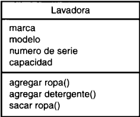

UML (llenguatge unificat de modelatge) és una eina que permet als analistes de sistemes, generar dissenys que capturen les seves idees de manera convencional i comunicar-les a altres persones. Els seus creadors són Grady Booch, James Rumbaugh i Ivar Jacobson, apodats "Els tres amics".
Diagrames de Classes:
Una classe és una categoria o grup de coses que tenen atributs i accions similars. Per exemple: si considerem la classe "Rentadora", aquesta té atributs com son la marca, la serie i la capacitat de càrrega. Entre les accions d'aquesta classe tenim "afegir roba", "afegir detergent", "possar en ON", etc. A sota tenim una representació d'una classe "Rentadora".
Diagrames de Estat:
En qualsevol moment, un objecte es troba en un estat particular. Així, el nostre exemple de la rentadora, aquesta pot estar en l'estat de rentar, centrifugant, apagada, etc. El diagrama d'estats UML captura aquesta xi coteta realitat. El símbol de la part superior de la figura de sota, representa l'estat inicial i el de la part inferior l'estat final.

Diagrames de Casos d'us:
Descriuen les accions des de'l punt de vista de l'usuari. A la figura corresponent a l'usuari de la rentadora l'anomenem "Actor" i la elipse representa el cas d'us. El actor (es a dir, la persona que inicia el cas d'us) pot ser una persona o un altra màquina.